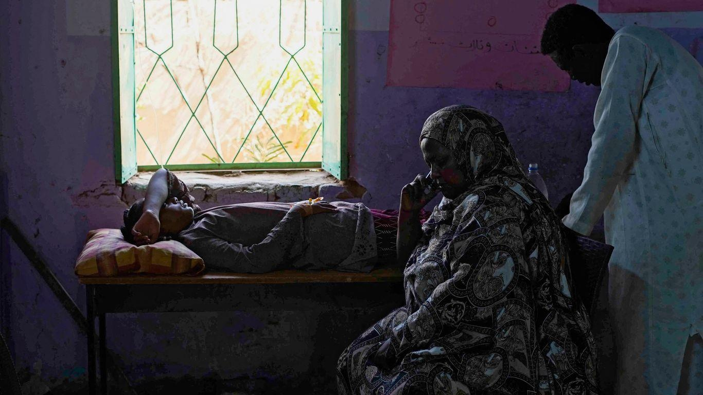

Nearly six months of war has brought Sudan's health system "to its knees"The warning from Sudan is dire: Nearly six months of war have created a deepening health crisis that could lead to hundreds — if not thousands — of more deaths if the fighting does not end. The big picture: The near-total collapse of Sudan's health system underscores how the consequences of war extend far beyond the fighting — often leading to more suffering and devastation that will likely continue long after a conflict ends. That's especially true in vulnerable countries, where already strained health systems quickly buckle when fighting breaks out. - In the case of Sudan, fighting between two rival generals in April that exploded into civil war has brought the country's health care system "to its knees despite enormous efforts by local clinics and aid agencies," the UN said last month. - About 70% of hospitals in states affected by the fighting are not functional, according to the World Health Organization, leaving many without treatment for injuries, chronic diseases and other illnesses, as well as routine care. - That reality has created a nearly impossible situation for health workers, who struggle to keep up with increasing demands, growing shortages of staff, supplies and medicine, and conditions that have created the ideal environment for infectious diseases to thrive. Driving the news: Several compounding factors have led to the health crisis Sudan faces today, Sudanese doctors tell Axios. - The country's health system was already strained before the war due to a lack of investment, years of political instability, and the pressure put on it during the COVID-19 pandemic. - That combined with the direct impacts of the fighting — on both Sudanese people and infrastructure — quickly destabilized the system. Insecurity Since the beginning of the conflict, the WHO has recorded more than 55 attacks on health facilities that have killed at least 11 health workers. - Fighters have raided and overrun hospitals, forcing workers and patients to flee and shutting down much-needed services. The fighting has also made it difficult for people to access health centers. Doctors, nurses and others are sleeping at hospitals due to the risk of commuting or because fighters have occupied their homes. - Bullets "rained down" as one woman, carrying her sick child on her back, rushed to the hospital because she feared her child would die at home without immediate care, says Dr. Amna Gasim of Albolouk pediatric hospital, the only such hospital operating in all of Khartoum state. - "The clashes are increasing and the danger is more than before," Gasim tells Axios. Shortages The health facilities that are still open are overcrowded, especially in areas where millions have fled. - That not only makes treating the wounded difficult, but it also makes it hard to address the needs of pregnant people and those suffering from chronic conditions like kidney disease and cancer or other illnesses. These hospitals are also facing shortages, including medical supplies, clean water and electricity. - Some supplies are available, says Claire Nicolet, Doctors Without Borders emergency manager for Sudan, but aid groups are unable to get the needed permission to securely move them into some of the most affected places, like the capital Khartoum. - "This situation cannot continue like this because, of course, we are starting to run out of some drugs and medical materials," Nicolet tells Axios. Soaring costs The rising cost of food and scale of displacement are exacerbating hunger-related health conditions in a country already struggling with food insecurity. - More than 1,200 children under the age of 5 have died in camps for displaced people due to a combination of measles and malnutrition, according to the UN last month. - At the Albolouk pediatric hospital, the most common cause of patient admissions over the last week has been malnutrition, Gasim says. Environment "perfect" for outbreaks The health crisis, along with heavy rains and poor sanitation, is creating a scenario that is "unfortunately perfect for an outbreak of cholera and other such diseases" in Sudan and neighboring countries hosting high numbers of refugees, the WHO said in August. - In addition to measles outbreaks, hundreds of cholera cases have since been reported, as have outbreaks of dengue and malaria. The bottom line: Health workers in Sudan tell Axios they're trying to do as much as they can with the limited supplies they have. - But without more help from the international community — both in providing aid and pressuring the warring parties to end the fighting — they expect that to become even harder. - "I'm worried about the health system ... which is collapsing now," says Dr. Alaa Eltayeb, the medical director for the Sudanese American Physicians Association in Wad Madani, where thousands have fled to since the war began. - "If things [don't] get better, I don't know if we can face it." Go deeper: Sudan conflict worsens already severely underfunded humanitarian crises |
 |